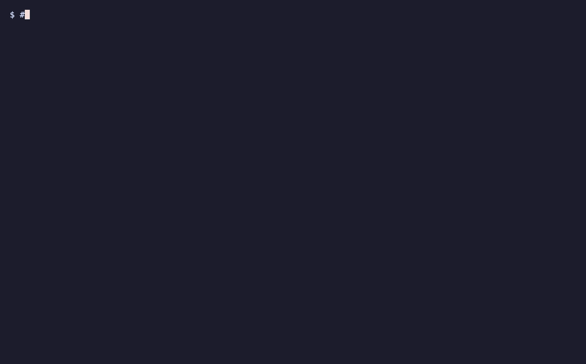
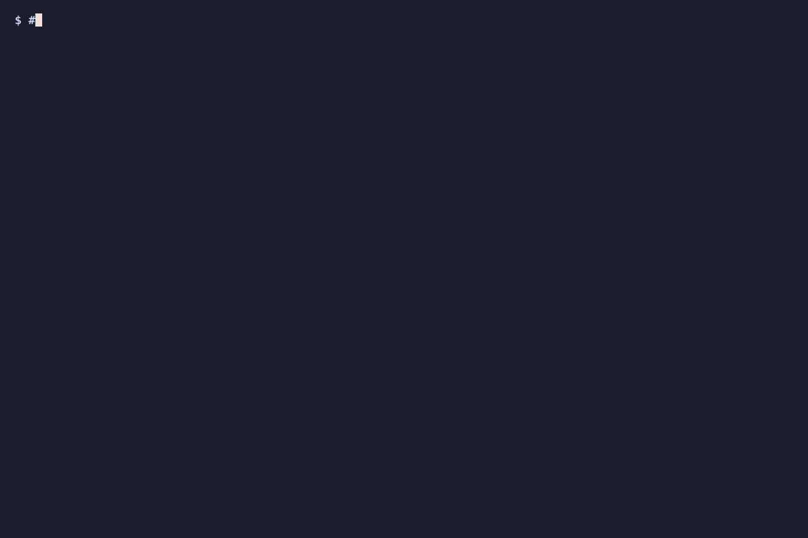

Lyrebird
Fake-but-believable network services, so malware in a sandbox keeps talking — and every technique it shows you has a detection waiting.
only
Lyrebird emulates benign services to observe malware in containment. It carries no implant, no command-and-control, and no evasion tooling. Run it on a segmented, non-routable network — never expose it to the internet.
A controlled internet for detonating samples
When you detonate malware in an isolated sandbox, it tries to reach the internet — to resolve a domain, beacon home, pull a payload, exfiltrate. Cut the network and it goes quiet, and you learn nothing. Lyrebird answers instead.
It stands up convincing fakes of the services malware reaches for — HTTP, DNS, SMTP, IRC, and more — so the sample behaves as if it were online while every byte stays inside the lab. Each interaction is recorded as one line of structured JSON, every uploaded payload is captured and hashed, and the whole session becomes evidence you can replay.
It's a spiritual successor to INetSim, whose last release shipped in 2020. Lyrebird keeps the proven model and rebuilds it async-first in Python, with one decisive difference: detection telemetry is a first-class output, not an afterthought.
What makes it different
- Telemetry built for a SIEM — one normalized JSON object per interaction, tailable straight into your pipeline.
- Detections ship with the emulator — every emulated technique carries a paired Sigma rule or analytic, versioned together.
- Async core — asyncio throughout; FastAPI for HTTP, async resolvers elsewhere.
- Auto lab CA — TLS handshakes just work; certificates are minted on first run.
- Container-native — one
docker compose upon a no-egress network.
Who it's for
Detection engineers building and validating rules against real malware behaviour. Malware analysts who need a sample to keep talking. SOC teams who want lab telemetry that looks like production telemetry.
curl/dig sample talks to the services, and every interaction lands as structured JSONL with detections firing as tags. Reproducible from demo/lyrebird.tape.
demo/lyrebird.honeypot.tape.
lyrebird.analyze triages the whole session into a verdict and candidate detections. Off by default; constrained to placeholder content only.Technique in, detection out
The core idea is a loop. A service emulates something malware does, tags the telemetry that matters, and a paired detection keys off that exact tag. The signal and the rule that catches it never drift apart because they're versioned together.
Emulate
A service answers the sample convincingly so it reveals its full network behaviour.
Capture & tag
The interaction becomes a normalized JSON event; notable behaviour gets a tag like long-label.
Detect
A Sigma rule selects on that tag; statistical cases go to a session analytic.
Validate
Replay the session against your pipeline to confirm the rule fires as intended.
Because the detection is written against the same JSONL schema the emulator emits, you can develop and regression-test rules without ever touching live malware infrastructure — the captured session is a fixture.
Sixteen services, each a specimen
Lyrebird matches and extends INetSim's coverage. Every service answers, captures, and emits — and each is enabled or disabled independently in config.
HTTP / HTTPS
Catch-all routing on any method or path. Templated responses, fakefile serving, full body capture, auto-TLS.
DNS
Answers every query; configurable A/AAAA/TXT, wildcard sinkhole. Logs each lookup.
DNS over TCP
Same sinkhole responder over the TCP transport for large or fallback queries.
SMTP
Accepts and captures mail, fake auth, logs the full envelope.
POP3
Fake mailbox; logs credentials and commands as the sample checks mail.
IMAP
Fake mailbox; logs LOGIN credentials and session commands.
FTP
Passive and active mode; captures STOR uploads as hashed artifacts.
TFTP
Captures WRQ uploads with a per-transfer id.
IRC
Observes classic bot C2 — nick, channel joins, PRIVMSG tasking.
NTP
Answers time with a configurable faketime delta; flags mode-6/7 control & MONLIST queries — the NTP amplification/reflection vector.
TLS (serve)
Fingerprints JA3/JA4, terminates with the lab cert, serves a placeholder — and correlates SNI vs Host on one connection.
TLS capture
Lightweight JA3/JA4 tap: fingerprint the ClientHello, then close.
SSH
asyncssh honeypot: captures brute-force credentials, then a fake shell logs commands and payload-pull URLs while fetching nothing.
Telnet
Plaintext IoT/Mirai honeypot: strips IAC negotiation, captures brute-force creds, then a fake shell logs commands.
QUIC / HTTP-3
aioquic HTTP/3 server: terminates QUIC with the lab cert, captures each h3 request and body, and answers benignly.
TCP sink
Catch-all for ports without a dedicated service; logs everything sent (INetSim "Dummy").
BaseService, implementing start() / stop(), emitting events with self.emit(...), and registering the class. That's the whole contract.One line of JSON per interaction
Everything keys off this schema — the log files, SIEM ingestion, the optional analysis layer, and every Sigma rule. It's the contract; change it deliberately.
// labdata/events/<session>.jsonl — one object per line { "schema": "1.0", "ts": "2026-06-29T12:00:00.000+00:00", "session": "20260629T120000-a1b2c3", "event_id": "f3a9…", "service": "dns", // http | dns | smtp | irc | … "transport": "udp", // tcp | udp "src_ip": "10.13.37.66", "src_port": 51000, "dst_port": 53, "event_type": "request", // connection | request | auth | capture "summary": "A evil.example", "request": { "qname": "evil.example.", "qtype": "A" }, "response": { "rcode": 0, "answer": "10.13.37.1" }, "artifacts": [], // captured payloads, hashed + stored "tags": ["long-label"] // what the detections select on }
Captured payloads — uploads, mail bodies, raw socket data — are written to labdata/artifacts/<service>/, SHA-256 hashed, and referenced from the event's artifacts array. The tags field is the hinge: it's where a service flags behaviour, and where every rule below looks.
Every technique, its paired rule
A set of single-event Sigma rules and a correlation rule ship in detections/sigma/, each selecting on a tag the emulator emits. Levels are shipped defaults — tune to your environment. The full, always-current list is generated in REFERENCE.md.
| Detection | Selects on | Catches | Level |
|---|---|---|---|
| DNS long label | dns · long-label | DGA / DNS tunneling via long high-entropy labels | medium |
| DNS sandbox probe | dns · sandbox-probe | Resolution of a non-existent domain (realistic mode) | medium |
| HTTP no User-Agent | http · missing-user-agent | Beacons that omit or hard-code a UA | low |
| HTTP automation UA | http · suspicious-user-agent | Beacon with a library/hardcoded User-Agent | medium |
| HTTP outbound body | http · data-out | POST/PUT body — possible exfil or beacon check-in | low |
| Frontable-host beacon | host∈CDN + missing-ua | Domain fronting (app-layer tell) | medium |
| SMTP bulk recipients | smtp · bulk-recipients | Mass-mailer / spam-bot behaviour | medium |
| IRC channel join | irc · channel-join | Classic botnet command channel | high |
| FTP / TFTP upload | ftp|tftp · upload | Exfil or secondary-payload staging | medium |
| Known-bad JA3/JA4 | tls_capture · ja3/ja4 | Malicious TLS client fingerprints | high |
| TLS SNI/Host mismatch | tls · sni-host-mismatch | Domain fronting (TLS-layer tell) | high |
| High-frequency beacon | ≥20 req / src_ip / 10m | Correlation: automated beaconing | medium |
For the cases a single event can't show
Timing and content evasions aren't single-event signatures. Three analytics run over a captured session and report the fingerprints those techniques leave behind — detection only; none generates traffic.
lyrebird.beacons
Cadence, jitter, and channel rotation. It measures inter-arrival times per source→target and classifies by coefficient of variation (CV):
- Near-perfect beacon — CV below 0.10.
- Jittered beacon — CV 0.10–0.50, the bounded mean ± jitter band, distinct from random traffic's high CV.
- Channel rotation — one source cycling ≥ 3 targets over ≥ 6 hits.
# defensive pair to beacon-jitter / rotation
python -m lyrebird.beacons \
--session labdata/events/<id>.jsonl
lyrebird.mimicry
Traffic mimicry and encryption tells. It flags:
- protocol-on-unexpected-port — known protocol bytes on the wrong port (tunneling).
- possible-domain-fronting — frontable Host + beacon-like request.
- browser-ua-but-bot — browser UA, non-browser behaviour.
- encrypted-body — near-maximal Shannon entropy (~8 bits/byte).
# defensive pair to mimicry / encryption
python -m lyrebird.mimicry \
--session labdata/events/<id>.jsonl \
--data-dir labdata
lyrebird.dns_tunnel
DNS tunneling / data-exfil channels — what a single long label can't confirm. It groups a session's DNS queries by source and parent domain and flags a channel by:
- volume — many queries under one parent domain.
- entropy — high mean subdomain Shannon entropy (encoded data).
- uniqueness — near-all-unique subdomains (one query per chunk).
# defensive pair to DNS exfil / tunneling
python -m lyrebird.dns_tunnel \
--session labdata/events/<id>.jsonl
Boot a lab in one command
Run it directly, or containerized on an internal network with no outbound route.
From PyPI
pip install lyrebird-emulator lyrebird
From source
pip install -r requirements.txt python -m lyrebird --config config/lyrebird.yaml
Containerized — recommended
# compose network is `internal: true` — no egress by default cd docker && docker compose up --build
Point your analysis VM's default gateway and DNS at the Lyrebird host, detonate the sample, and watch the events stream in. Toggle services at launch without editing config:
python -m lyrebird --disable smtp,ntp python -m lyrebird --enable http,dns --no-banner
One readable YAML, sane defaults
Any omitted value falls back to a built-in default, so the file can be as small as you like — even empty gives a working lab. Responses are customizable per service without touching code.
bind_address: "0.0.0.0" data_dir: "./labdata" echo: true # mirror events to stdout live tls: enabled: true # auto-generate a lab CA + leaf certs services: http: enabled: true port: 80 responses: # first match wins → fakefile → model → default http: - path: "/gate.php" method: "POST" body: '{"status":"ok","task":"none"}' dns: enabled: true default_a: "10.13.37.1" # sinkhole for unmatched A queries responses: dns: - qname: "*.evil-c2.com" answer: "10.13.37.66" # point a family at one sink host
Response resolution is operator rule → fakefile → model responder (if enabled) → built-in default, and the chosen source is recorded on every event. Fakefile serving is path-traversal protected.
Optional analysis, never required
A vendor-agnostic model layer can triage a captured session into a verdict plus candidate Sigma ideas. It's optional and air-gap-friendly — selecting local keeps all data on-host.
| Provider | Backend |
|---|---|
| anthropic | Claude |
| openai | OpenAI |
| gemini | Google Gemini |
| local | any OpenAI-compatible server — Ollama, LM Studio, llama.cpp, vLLM |
| mock | offline deterministic stub for tests |
python -m lyrebird.analyze \
--session labdata/events/<id>.jsonl --provider local
Stay on the defensive side of the line
Lyrebird is a defensive tool, and contributions keep it there. The emulator responds to malware; it never becomes the malware.
In scope
- New service emulators and response profiles.
- Detection analytics, Sigma rules, fixtures.
- Docs, tests, packaging.
Out of scope
- Implants, agents, beacon payloads.
- Real command-and-control capability.
- Evasion tooling aimed at defeating production defenses.
The bar for a PR: tests green on Python 3.10–3.12, Sigma lint passing if you touched detections, new behaviour shipping with its paired detection, and an SPDX header on every file. If a change would make Lyrebird useful for attacking rather than observing, it's out of scope.
python -m venv .venv && . .venv/bin/activate pip install -r requirements.txt pytest PYTHONPATH=src python -m pytest tests/ -q # all green PYTHONPATH=src python scripts/lint_sigma.py # detection lint